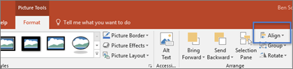

Click the shape that you want to change.
To select multiple shapes, press and hold CTRL while you click the shapes.
For more information about selecting shapes.
Under Drawing Tools, on the Format tab, in the Insert Shapes group, click Edit Shape .

If you do not see the Drawing Tools or Format tabs, make sure that you selected a shape.
Point to Change Shape, and then click the shape that you want.